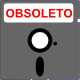

La etiqueta <a>
Enlaces
En el código fuente HTML los enlaces se identifican mediante la etiqueta <a> y su atributo href, que contiene el URI del destino al que conduce el enlace. Los URI del destino pueden ser absolutos (http://www....) o relativos (con respecto al directorio actual).
Los enlaces de texto se muestran en los navegadores de color azul y subrayados.
<p>Enlace a la <a href="http://www.cdlibre.org/">página principal de cdlibre</a>.</p>
<p>Logotipo de cdlibre: <a href="http://www.cdlibre.org/"><img src="../img/cdlibre-logo.png" alt="Logotipo de cdlibre" title="Logotipo de cdlibre" width="118" height="70" /></a></p>
Si en el atributo href se escribe simplemente el carácter almohadilla (#), casi todos los navegadores se desplazan al principio de la página (aunque creo que este comportamiento no está definido en ninguna recomendación).
<p>Este es un <a href="#">enlace al principio de esta página</a>.</p>
Este es un enlace al principio de esta página.
Destinos
Con relación a los destinos de los enlaces, podemos distinguir tres tipos de destinos:
- archivos (página web, imagen o cualquier otro tipo de archivo)
- directorios
- elementos dentro de una página web
En cada caso, la situación es ligeramente distinta:
- Si el destino es un archivo, es suficiente con conocer la dirección (URL) del archivo. Si el navegador puede mostrar el archivo, el archivo se mostrará en el navegador. Los navegadores pueden mostrar ciertos archivos directamente (por ejemplo, páginas web o imágenes) o mediante plug-ins (por ejemplo, archivos flash, pdf, etc.). Si el navegador no puede mostrar el archivo, el navegador preguntará al usuario qué quiere hacer con el archivo (guardarlo, elegir el programa con el que abrir el archivo, etc.)
<p>Enlace a la <a href="http://www.cdlibre.org/otros/novedades.html"> página de novedades de cdlibre</a>.</p>Enlace a la página de novedades de cdlibre.
<p>Enlace al <a href="http://www.cdlibre.org/img/cdlibre_logo.png">logotipo de cdlibre</a>.</p>Enlace al logotipo de cdlibre.
Enlace al <a href="../ejercicios/imagenes/florencia/florencia-plantilla.zip">archivo .zip de un ejercicio</a> de estos apuntes</p>Enlace al archivo .zip de un ejercicio de estos apuntes
- Si el destino es un directorio, el servidor puede estar configurado para mostrar un archivo determinado (index.html, home.html, index.php, etc.), para mostrar el contenido del directorio, o incluso para rechazar la petición.
<p>Enlace a la <a href="http://www.cdlibre.org/">página principal de cdlibre</a>.</p>Enlace a la página principal de cdlibre.
<p>Enlace al <a href="http://www.cdlibre.org/consultar/catalogo/">catálogo de software de cdlibre</a>.</p>Enlace al catálogo de software de cdlibre.
<p>Enlace al <a href="http://www.mclibre.org/consultar/htmlcss/html/">directorio de lecciones de html de estos apuntes</a>.</p> - Si el destino es un elemento de una página web (por ejemplo, un párrafo en el interior de una página web), es necesario identificar de forma única el punto de destino mediante el atributo id.
En este caso, el atributo href contiene la dirección de la página, el carácter almohadilla (#) y el atributo id del destino. En caso de ser un enlace dentro de la misma página sólo se necesita el carácter almohadilla (#) y el atributo id del destino.
<p>Enlace a <a href="http://www.cdlibre.org/otros/faq.html#descargado">una pregunta de la FAQ de cdlibre</a>.</p>Este es el enlace a una pregunta de la FAQ de cdlibre.
<p>Enlace al <a href="#ejemplo">párrafo siguiente</a>.</p> <p id="ejemplo">Este párrafo es el destino del enlace anterior.</p>Este es el enlace al párrafo siguiente.
Este párrafo es el destino del enlace anterior.
Como se comenta en la lección sobre elementos obsoletos, en HTML 3.2 y anteriores los destinos se identificaban mediante la etiqueta <a> y el atributo name. En HTML 4.X y XHTML 1.0, los destinos se podían seguir identificando así, pero se recomendaba utilizar el entonces nuevo atributo id. En XHTML 1.1 se eliminó el atributo name de la etiqueta <a> y sólo se podía utilizar el atributo id para identifcar los destinos. En HTML 5 también se ha eliminado el atributo name de la etiqueta <a> y sólo se puede utilizar el atributo id para identifcar los destinos.
{kind=link}
Enlaces no HTTP
Los navegadores son capaces de gestionar otros protocolos distintos a HTTP, por ejemplo el protocolo FTP:
<p>Enlace al <a href="ftp://glup.uv.es/pub/cdlibre/">servidor FTP de cdlibre</a>.</p>
Esto es un enlace al servidor FTP de cdlibre.
Un enlace con el atributo href con el valor mailto:dirección_de_correo_electrónico abre automáticamente el cliente de correo electrónico (Outlook, Thunderbird, Evolution, etc.) con un correo dirigido a la dirección indicada. El uso cada vez más extendido del correo web hace que esta opción sea un engorro más que una ayuda.
<p>Haciendo clic en este enlace se abrirá el cliente de correo para <a href="mailto:fulanito@example.org">enviar un correo a fulanito@example.org</a> (dirección ficticia).</p>
Haciendo clic en este enlace se abrirá el cliente de correo para enviar un correo a fulanito@example.org (dirección ficticia).